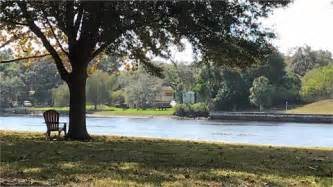

Tribe on the River 2018
The "Tribe on the River" is an annual retreat for AA and Alanon women. The focus of the treat is renewal through internal reflection, prayer and meditation, and fellowship. The Franciscan Center of Tampa at 3010 N. Perry Ave, Tampa, FL is the host location and provides and environment conducive to spiritual exploration and expansion. Your registration fee includes lodging for both Friday and Saturday night, meals, and all conference workshop and speaker sessions.
Single Occupancy: $250.oo
Double Occupancy: $230.oo
We hope you can join is this year for "Tribe on the River 2018".
Pass it on!